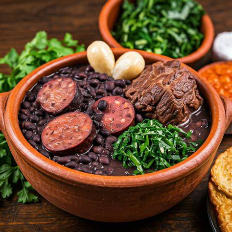
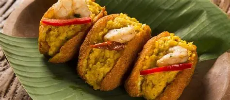
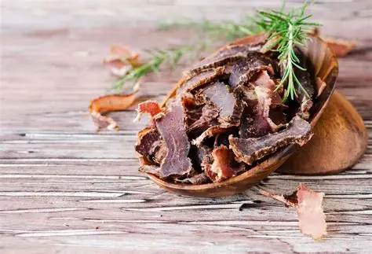
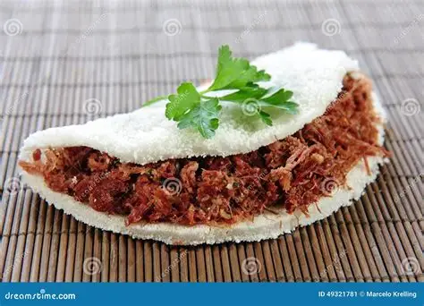
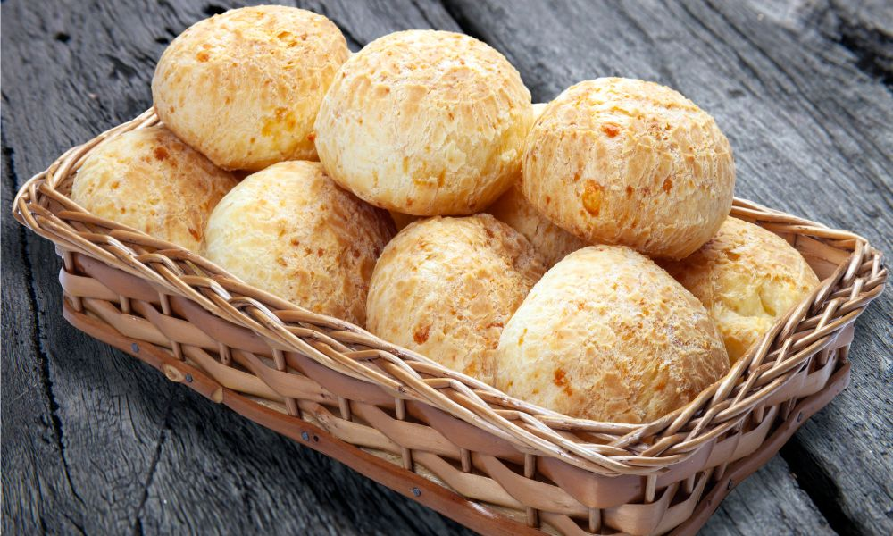
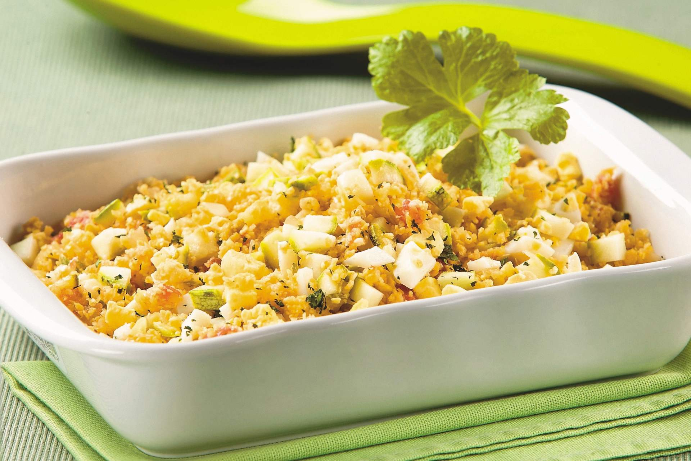
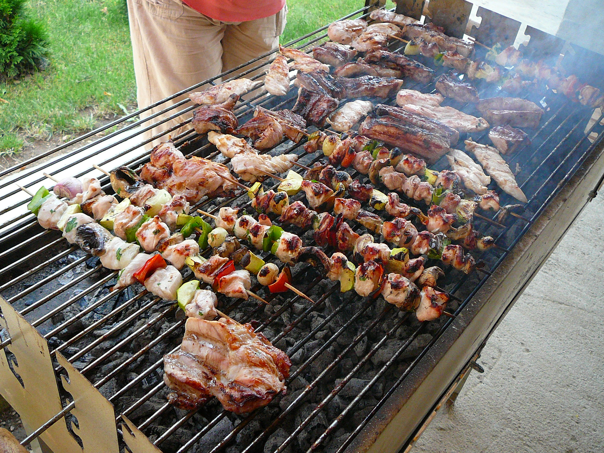
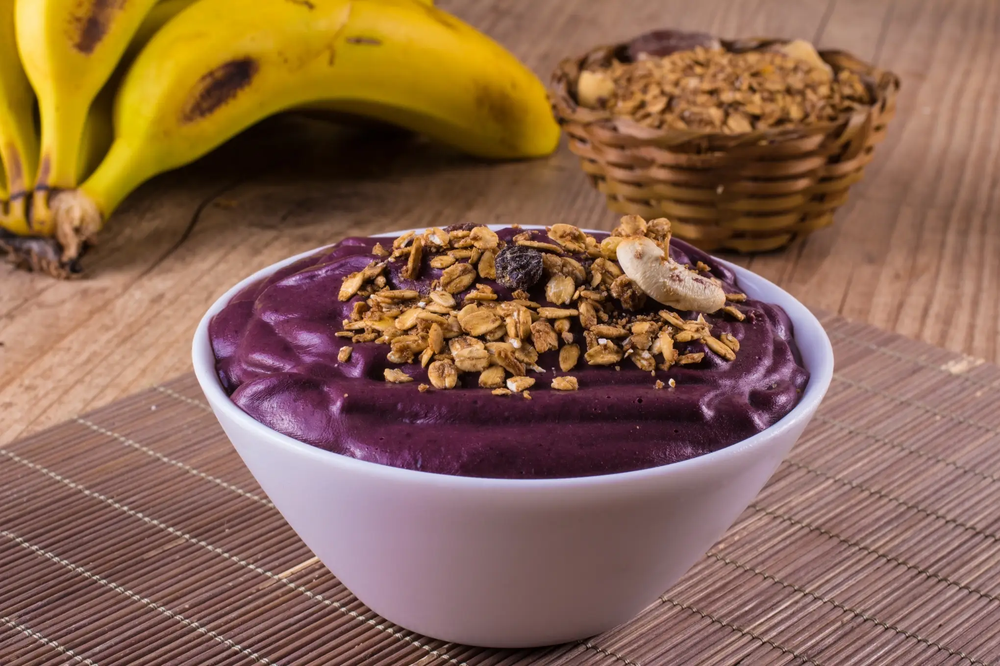
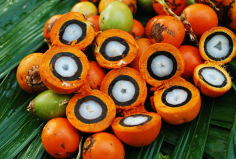

Prato em Destaque

FeijoadaFeijoada: o prato mais brasileiro de todos
A feijoada é considerada o prato nacional do Brasil. Feita com feijão-preto e carnes suínas, ela é servida tradicionalmente aos sábados, acompanhada de arroz, couve refogada, farofa, laranja e caipirinha. Sua origem remonta ao período colonial e é um símbolo de união e celebração.
→ Presente em todo o território nacional, com variações regionais
Culinária do Nordeste

Acarajé
Bolinho de feijão-fradinho frito no azeite de dendê, recheado com vatapá e camarão. Símbolo da Bahia.
Bahia
Baião de Dois
Mistura de arroz, feijão e queijo coalho. Prato típico do sertão nordestino, cheio de sabor.
Ceará / Nordeste
Tapioca
Feita de goma de mandioca, a tapioca é consumida no café da manhã com diferentes recheios doces ou salgados.
NordesteCulinária do Sudeste

Pão de Queijo
Ícone de Minas Gerais feito com polvilho azedo e queijo minas. Crocante por fora, macio por dentro.
Minas Gerais
Virado à Paulista
Prato típico de São Paulo com feijão batido, torresmo, linguiça, bisteca, ovo, banana e couve.
São PauloCulinária do Sul

Churrasco Gaúcho
Tradição do Rio Grande do Sul com carnes nobres assadas em espeto sobre brasa de lenha.
Rio Grande do SulCulinária do Norte

Açaí Nativo
Fruto amazônico consumido como polpa espessa, acompanhado de peixe salgado ou tapioca na forma tradicional.
Pará / Amazônia
X-Caboquinho
Sanduíche típico de Manaus com tucumã (fruto amazônico) e queijo coalho frito. Sabor único!
Amazonas